Plot random terms of communityPGLMM
Daijiang Li
2026-11-22
Source:vignettes/plot-re.Rmd
plot-re.RmdThis vignette will show how to visualize the var-covariance matrix of
random terms for communityPGLMM models.
Main function
The main function to use is phyr::pglmm_plot_re()
(alias: phyr::pglmm_plot_ranef(),
phyr::communityPGLMM.show.re(),
phyr::communityPGLMM.plot.re()). Here are the arguments of
this function:
args(phyr::pglmm_plot_re)
## function (formula = NULL, data = NULL, family = "gaussian", sp.var = "sp",
## site.var = "site", tree = NULL, tree_site = NULL, repulsion = FALSE,
## x = NULL, show.image = TRUE, show.sim.image = FALSE, random.effects = NULL,
## add.tree.sp = TRUE, add.tree.site = FALSE, cov_ranef = NULL,
## tree.panel.space = 0.5, title.space = 5, tree.size = 3, ...)
## NULLSome brief explanation of arguments:
-
x: a model with class communityPGLMM, if it is specified, then all other argument before x will be ignored. -
show.image(TRUEorFALSE): whether to plot the var-cov matrix of random terms? -
show.sim.image(TRUEorFALSE): whether to plot simulated site by species matrix for all random terms? -
add.tree.sp(TRUEorFALSE): whenshow.sim.image = TRUE, whether to add a phylogeny of species at the top of each matrix plot? -
add.tree.site(TRUEorFALSE): whenshow.sim.image = TRUE, whether to add a phylogeny of sites at the right of each matrix plot? This can be useful for bipartite problems (e.g. pollinators (species) and plants (sites)). -
tree.size(default is 3): the height of the phylogenies to plot, unit is number of lines.
This function will return a hidden list, which includes all the
var-cov matrices of random terms, simulated site by species matrices,
individual plots, and all plots in one figure for both var-cov matrices
and simulated ones. Therefore, we can extract specific plots and then
update them or generate new figure with
gridExtra::grid.arrange(). This is because all generated
plots are based on lattice package and are all
grid object. Therefore, we can also use
gridExtra::arrangeGrob() to put multiple plots in one
figure and then use ggplot2::ggsave() to save it as
external file (e.g. PDF). Of course, pdf() and
dev.off() will also work.
Simulate data
Now, let’s show how to use this function to help us understanding better the random terms.
library(ape)
library(phyr)
suppressPackageStartupMessages(library(dplyr))
set.seed(12345)
nspp <- 7
nsite <- 5
# Simulate a phylogeny that has a lot of phylogenetic signal (power = 1.3)
phy <- compute.brlen(rtree(n = nspp), method = "Grafen", power = 1.3)
# Simulate species means
sd.sp <- 1
mean.sp <- rTraitCont(phy, model = "BM", sigma = sd.sp^2)
Y.sp <- rep(mean.sp, times = nsite)
# Phylogenetically correlated response of species to env
sd.trait <- 1
trait <- rTraitCont(phy, model = "BM", sigma = sd.trait)
trait <- rep(trait, times = nsite)
# Simulate site means
sd.site <- 1
mean.site <- rnorm(nsite, sd = sd.site)
Y.site <- rep(mean.site, each = nspp)
# Site-specific environmental variation
sd.env <- 1
env <- rnorm(nsite, sd = sd.env)
# Generate covariance matrix for phylogenetic attraction
sd.attract <- 1
Vphy <- vcv(phy)
Vphy <- Vphy / (det(Vphy) ^ (1 / nspp))
V.attract <- kronecker(diag(nrow = nsite, ncol = nsite), Vphy)
Y.attract <- array(t(chol(sd.attract ^ 2 * V.attract)) %*% rnorm(nrow(V.attract)))
# Residual errors
sd.e <- 1
Y.e <- rnorm(nspp * nsite, sd = sd.e)
# Construct the dataset
d <- data.frame(sp = rep(phy$tip.label, times = nsite),
site = rep(1:nsite, each = nspp),
env = rep(env, each = nspp))
# Simulate abundance data
d$Y <- Y.sp + Y.attract + trait * d$env + Y.e
head(d)
## sp site env Y
## 1 t4 1 -1.060266 -1.0602761
## 2 t2 1 -1.060266 1.8082359
## 3 t5 1 -1.060266 -0.7740624
## 4 t3 1 -1.060266 0.4563490
## 5 t6 1 -1.060266 0.3071180
## 6 t7 1 -1.060266 -0.3924501
# fit a model
mod_1 = pglmm(Y ~ 1 + env + (1|sp__) + (1|site) + (env|sp__) + (1|sp__@site),
data = d, cov_ranef = list(sp = phy))
summary(mod_1)
## Linear mixed model fit by restricted maximum likelihood
##
## Formula: Y ~ 1 + env + (1 | sp__) + (1 | site) + (env | sp__) + (1 | sp__@site)
##
## logLik AIC BIC
## -65.81 149.61 163.61
##
## Random effects:
## Variance Std.Dev
## 1|sp 0.0000 0.0000
## 1|sp__ 0.4807 0.6933
## 1|site 0.0000 0.0000
## env|sp 0.0000 0.0000
## env|sp__ 0.5121 0.7156
## 1|sp__@site 0.1987 0.4457
## residual 1.4605 1.2085
##
## Fixed effects:
## Value Std.Error Zscore Pvalue
## (Intercept) 0.65681 0.66691 0.9849 0.3247
## env 0.73335 0.66749 1.0987 0.2719Var-cov matrices of random terms
Plot var-cov matrices of all random terms in one figure
# plot var-cov matrices of random terms
mod1re = pglmm_plot_re(Y ~ 1 + env + (1|sp__) + (1|site) + (env|sp__) + (1|sp__@site),
data = d, cov_ranef = list(sp = phy), show.image = TRUE,
show.sim.image = FALSE)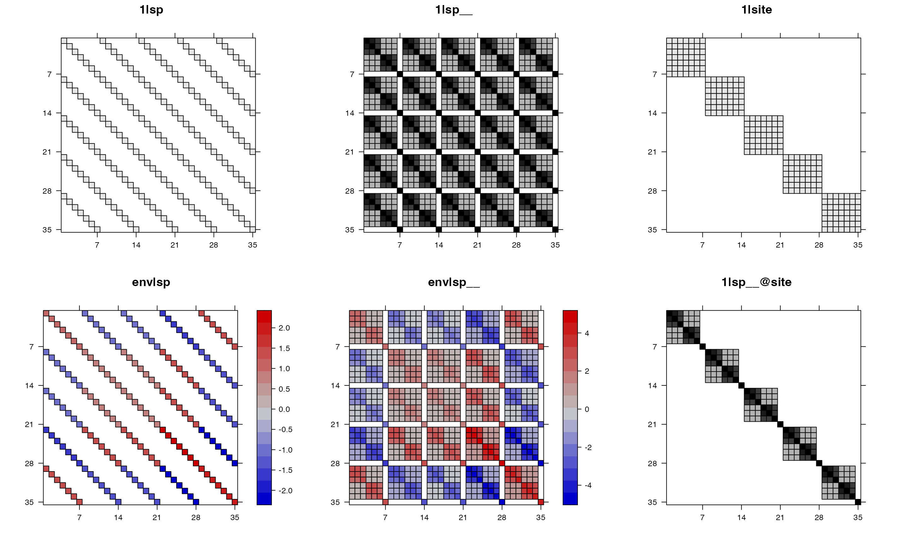
In the above plot, we can see that some of the panels are black-white
but some have colors. This is because, by default, if a matrix has both
positive and negative values, then the function will use red-blue color
and will draw a key for that (use colorkey = FALSE to
suppress it). If a matrix does not have negative values, then the
function will use black/white color (use useAbs = FALSE to
use color instead, and use colorkey = FALSE to suppress key
if wanted). In both cases, value 0 will be white so that the structure
of the var-cov matrix can be easier to see.
# all use color with useAbs = FALSE
pglmm_plot_re(Y ~ 1 + env + (1|sp__) + (1|site) + (env|sp__) + (1|sp__@site),
data = d, cov_ranef = list(sp = phy), show.image = TRUE,
show.sim.image = FALSE, useAbs = FALSE)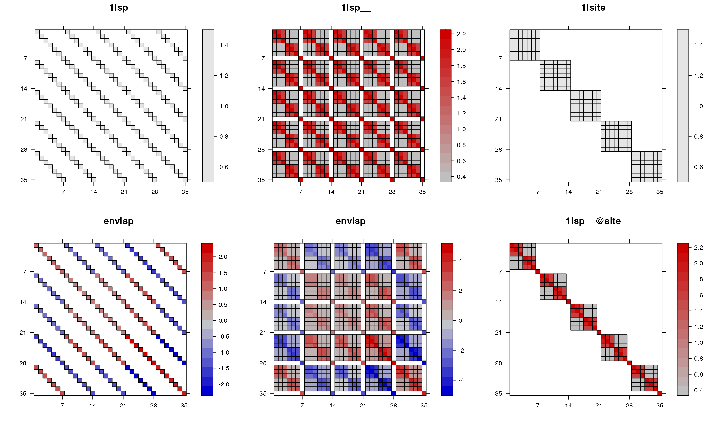
For the above plot, notice that for 1|sp and
1|site, all values are either 1 or 0 even though we have a
range in the key. We can suppress the key with
colorkey = FALSE.
# suppress key with colorkey = FALSE
pglmm_plot_re(Y ~ 1 + env + (1|sp__) + (1|site) + (env|sp__) + (1|sp__@site),
data = d, cov_ranef = list(sp = phy), show.image = TRUE,
show.sim.image = FALSE, useAbs = FALSE, colorkey = FALSE)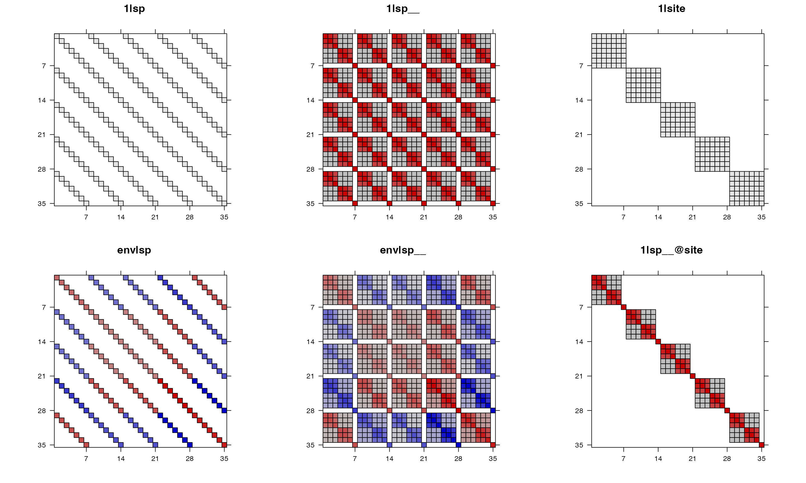
We can also just use colorkey = FALSE and still use
black/white color for matrices that do not have negative values (without
setting useAbs).
# suppress colorkey, let the function decide whether use color or not
pglmm_plot_re(Y ~ 1 + env + (1|sp__) + (1|site) + (env|sp__) + (1|sp__@site),
data = d, cov_ranef = list(sp = phy), show.image = TRUE,
show.sim.image = FALSE, colorkey = FALSE)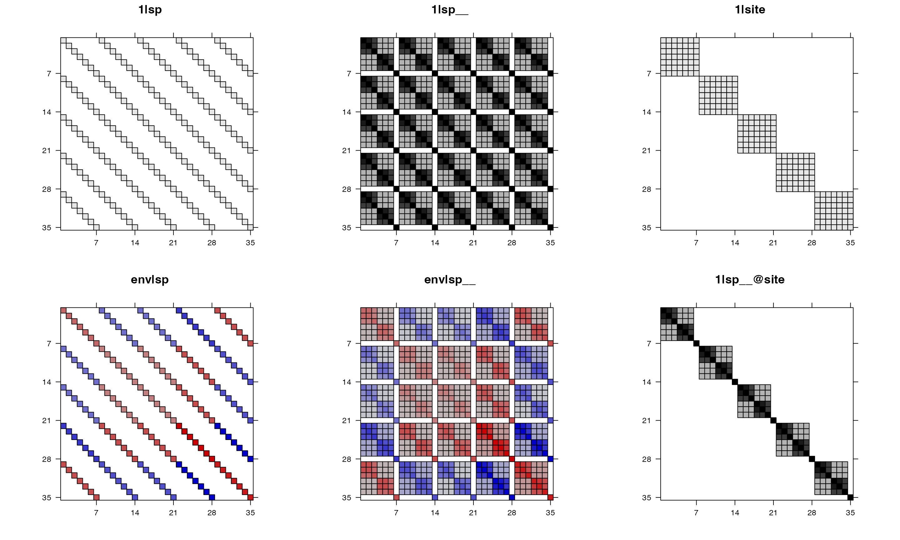
To make all plots black or white, use useAbs = TRUE.
# all black and white
pglmm_plot_re(Y ~ 1 + env + (1|sp__) + (1|site) + (env|sp__) + (1|sp__@site),
data = d, cov_ranef = list(sp = phy), show.image = TRUE,
show.sim.image = FALSE, useAbs = TRUE)
Individual plots for var-cov matrices
Instead of plotting all var-cov matrices in one figure, we can also select the ones we are interested and then work from there.
names(mod1re)
## [1] "vcv" "sim" "tree"
## [4] "plt_re_list" "plt_sim_list" "plt_re_all_in_one"So, the data of var-cov matrices are saved as
mod1re$vcv, which is a list. We can use this list to plot
the random terms in other ways, using either the base R or ggplot2
package.
names(mod1re$vcv)
## [1] "1|sp" "1|sp__" "1|site" "env|sp" "env|sp__"
## [6] "1|sp__@site"The individual plots are saved as mod1re$plt_re_list,
which is also a list.
names(mod1re$plt_re_list)
## [1] "1|sp" "1|sp__" "1|site" "env|sp" "env|sp__"
## [6] "1|sp__@site"
mod1re$plt_re_list[[6]]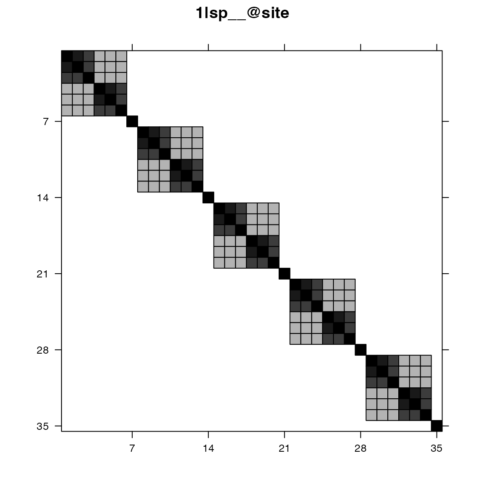
The individual plots were generated using
Matrix::image(), which used
lattice::levelplot() as the back bone function.
Matrix::image(mod1re$vcv[[6]], xlab = "", ylab = "", sub = "", main = "1|sp__@site")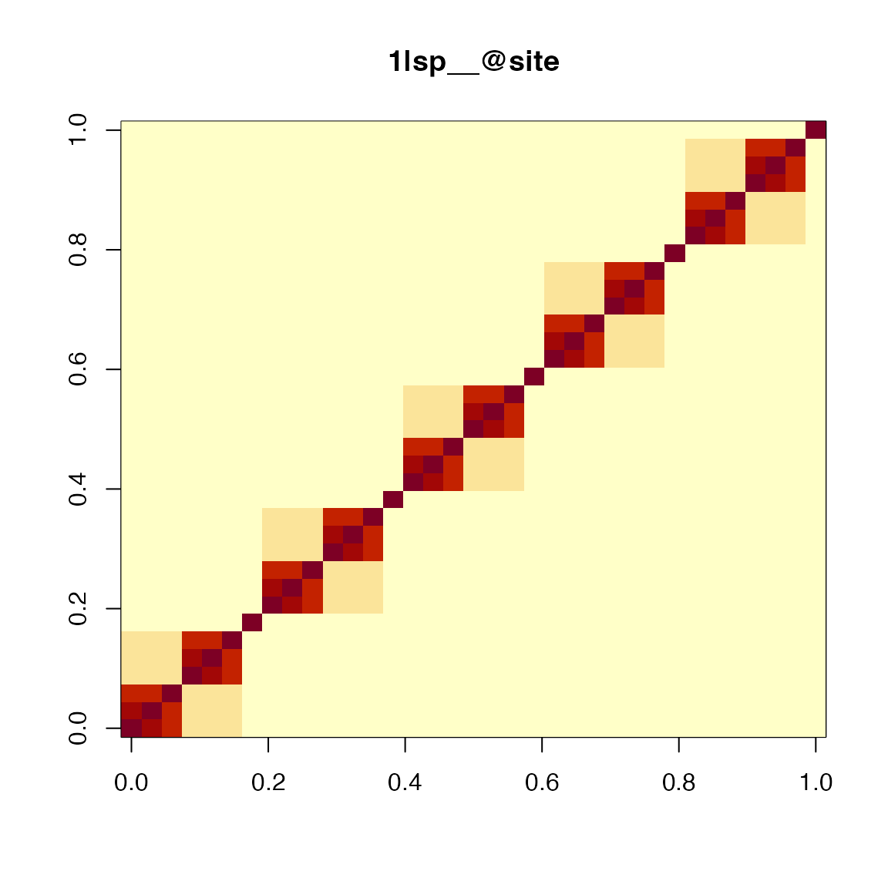
We can also pick the ones that we are interested in and put them in
one figure. For example, suppose that we are only interested in those
with phylogenetic relationships. That is, 1|sp__,
env|sp__, and 1|sp__@site.
gridExtra::grid.arrange(grobs = mod1re$plt_re_list[c(2, 5, 6)], nrow = 1)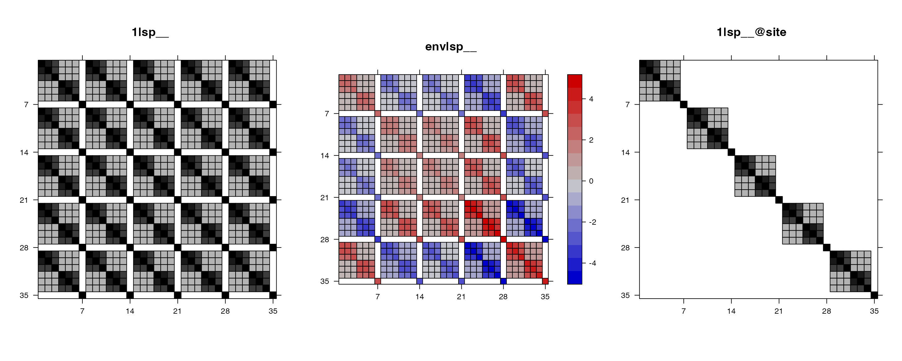
To save this plot, we can wrap the above line of code within
pdf() and dev.off().
Simulated site by species matrix for random terms
For each random term, we can simulate some values for all data points. We can reshape this long format into a site by species matrix. By plotting this site by species matrix, we can see what does “closely related species have similar abundance (within or across sites)” mean.
Plot simulated matrices of all random terms in one figure
# plot simulated matrices of random terms
mod1sim = pglmm_plot_re(Y ~ 1 + env + (1|sp__) + (1|site) + (env|sp__) + (1|sp__@site),
data = d, cov_ranef = list(sp = phy), show.image = FALSE,
show.sim.image = TRUE)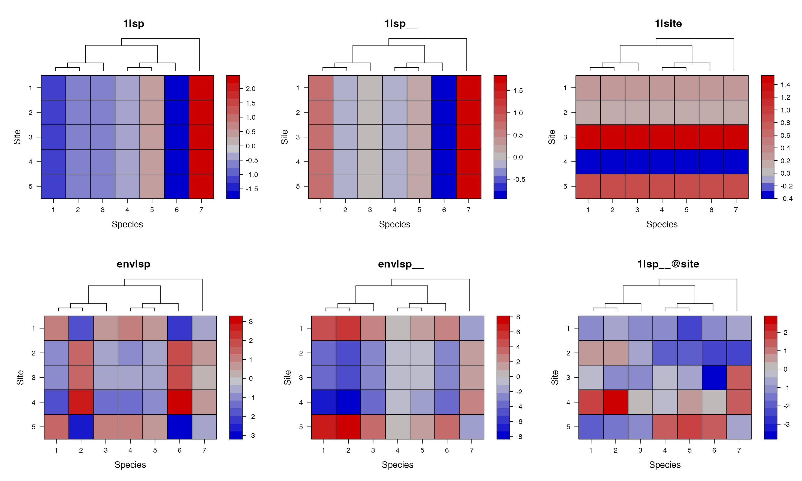
For the 1|sp__ panel, we can see that closely related
species have similar value across all sites. While the
`|sp__@site panel shows that closely related species within
each site have similar values.
By default, we added a phylogeny for species at the top of each panel
when we show the simulated site by species matrices. This can be
suppressed with add.tree.sp = FALSE.
pglmm_plot_re(Y ~ 1 + env + (1|sp__) + (1|site) + (env|sp__) + (1|sp__@site),
data = d, cov_ranef = list(sp = phy), show.image = FALSE,
show.sim.image = TRUE, add.tree.sp = FALSE)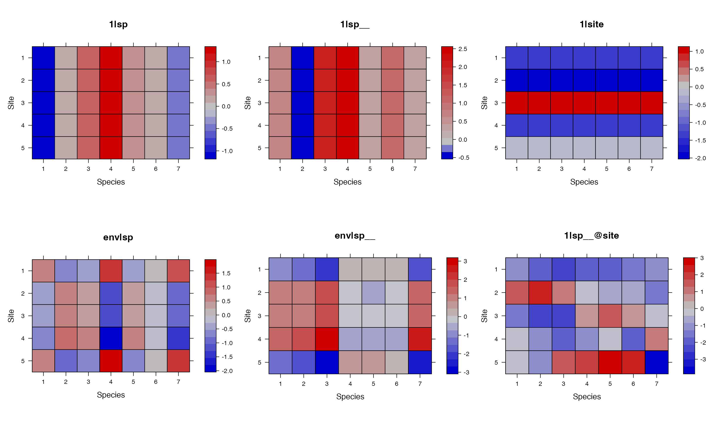
Again, we can remove the keys with colorkey = FALSE. We
can also use useAbs to force using color for all
panels.
pglmm_plot_re(Y ~ 1 + env + (1|sp__) + (1|site) + (env|sp__) + (1|sp__@site),
data = d, cov_ranef = list(sp = phy), show.image = FALSE,
show.sim.image = TRUE, add.tree.sp = TRUE,
colorkey = FALSE, useAbs = FALSE)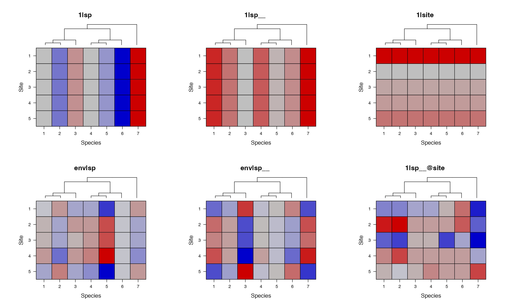
Individual plots for simulated site by species matrix
names(mod1sim)
## [1] "vcv" "sim" "tree"
## [4] "plt_re_list" "plt_sim_list" "plt_sim_all_in_one"The individual simulated matrices are saved as
mod1sim$sim and individual plots are saved as
mod1sim$plt_sim_list. We can use the same approach to
select our own plots as those of var-cov matrices.
We can control the space between the phylogeny and the matrix plot
with key.top argument in lattice::levelplot(),
which has a default value of 1 (line).
gridExtra::grid.arrange(grobs = mod1sim$plt_sim_list[c(2, 6)], nrow = 1)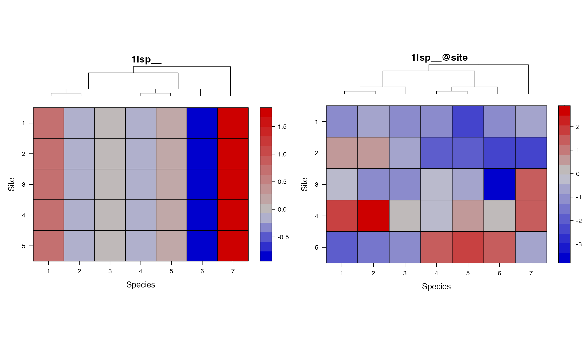
gridExtra::grid.arrange(grobs = lapply(mod1sim$plt_sim_list[c(2, 6)],
update,
par.settings = list(layout.heights =
list(key.top = 0.3,
main = 5))),
nrow = 1)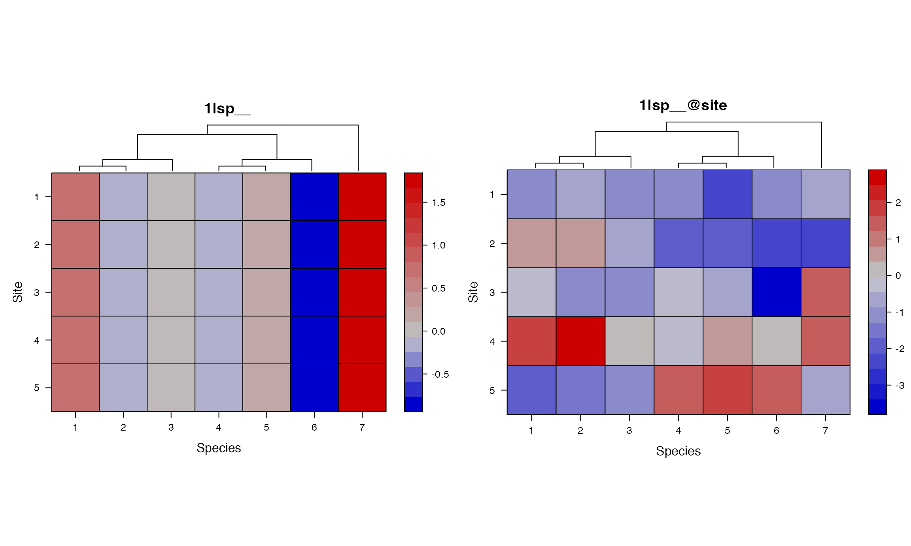
Fitted model as input
If you don’t have the model fitted, then the above way with specified formula, data, etc. can save you lots of time. Because it won’t actually fit the model, instead, it only return and plot the variance-cov matrices of random terms. However, if you already have the model fitted, you can just use the model as the input.
pglmm_plot_re(x = mod_1, show.image = FALSE, show.sim.image = TRUE,
add.tree.sp = TRUE, colorkey = FALSE, useAbs = FALSE)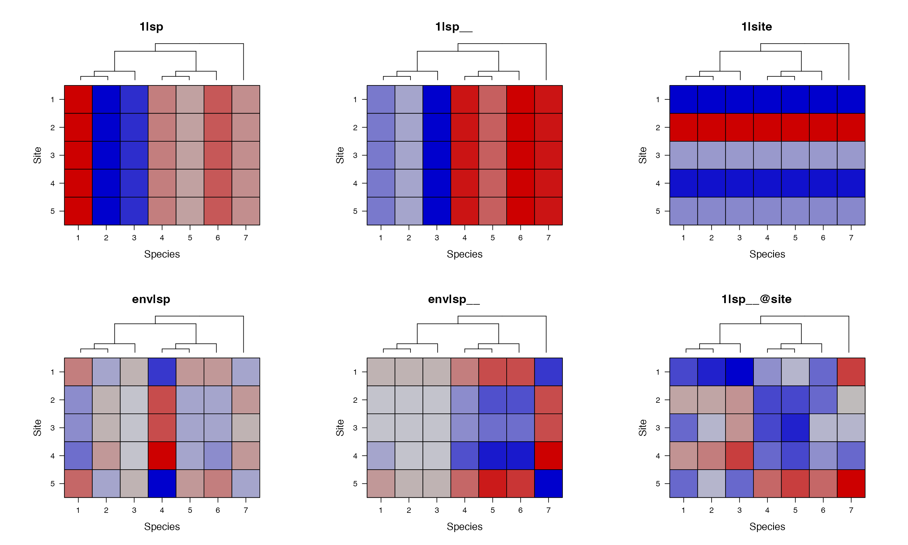
communityPGLMM.show.re(x = mod_1, show.image = TRUE, show.sim.image = FALSE, useAbs = TRUE)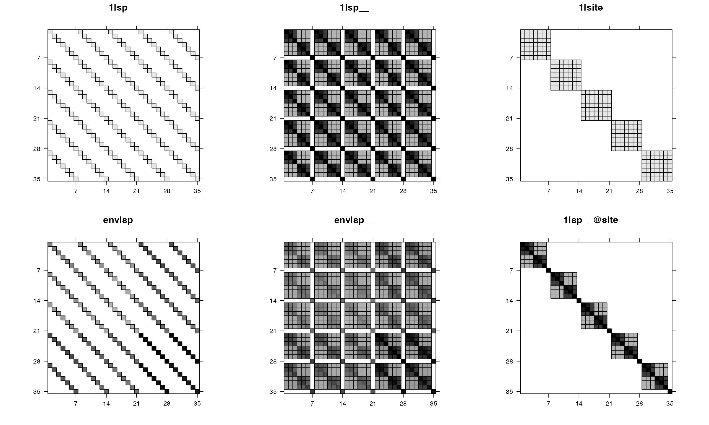